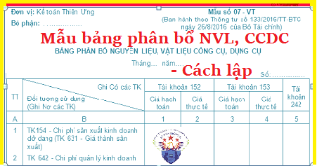

Hướng dẫn cách lập Bảng phân bổ nguyên vật liệu công cụ dụng cụ theo Thông tư 133 và 200 - Mẫu 07-VT, Giá trị nguyên vật liệu, công cụ dụng cụ phản ánh trong Bảng phân bổ nguyên liệu liệu, công cụ dụng cụ theo từng đối tượng sử dụng
I. Mẫu Bảng phân bổ nguyên vật liệu, công cụ dụng cụ:
|
Đơn vị: Kế toán Diệu Tâm Bộ phận: ……………… |
Mẫu số 07 - VT (Ban hành theo Thông tư số 133/2016/TT-BTC ngày 26/8/2016 của Bộ Tài chính) |
BẢNG PHÂN BỔ NGUYÊN LIỆU, VẬT LIỆU CÔNG CỤ, DỤNG CỤ
Tháng 09 năm 2026
Tháng 09 năm 2026
Số: ……………
| TT |
Ghi Có các TK Đối tượng sử dụng (Ghi Nợ các TK) |
Tài khoản 152 | Tài khoản 153 | Tài khoản 242 | ||
| Giá hạch toán | Giá thực tế | Giá hạch toán | Giá thực tế | |||
| A | B | 1 | 2 | 3 | 4 | 5 |
| 1 | TK154 - Chi phí sản xuất kinh doanh dở dang (TK 631 - Giá thành sản xuất) | |||||
| 2 | TK 642 - Chi phí quản lý kinh doanh | |||||
| 3 | TK 242- Chi phí trả trước | |||||
| 4 | …………………………. | |||||
| Cộng | ||||||
|
Người lập biểu
(Ký, họ tên) |
Ngày 15 tháng 09 năm 2026 Kế toán trưởng (Ký, họ tên) |
II. Cách lập Bảng phân bổ nguyên vật liệu, công cụ dụng cụ
1. Mục đích:
- Dùng để phản ánh tổng giá trị nguyên liệu, vật liệu, công cụ, dụng cụ xuất kho trong tháng theo giá thực tế và giá hạch toán và phân bổ giá trị nguyên liệu, vật liệu, công cụ, dụng cụ xuất dùng cho các đối tượng sử dụng hàng tháng (Ghi Có TK 152, TK 153, Nợ các tài khoản liên quan), Bảng này còn dùng để phân bổ giá trị công cụ, dụng cụ xuất dùng một lần có giá trị lớn, thời gian sử dụng dưới một năm hoặc trên một năm đang được phản ánh trên TK 242.
Xem thêm: Cách tính phân bổ công cụ dụng cụ
2. Phương pháp và trách nhiệm ghi
- Bảng gồm các cột dọc phản ánh các loại nguyên liệu, vật liệu và công cụ, dụng cụ xuất dùng trong tháng tính theo giá hạch toán và giá thực tế, các dòng ngang phản ánh các đối tượng sử dụng nguyên liệu, vật liệu, công cụ, dụng cụ.
- Căn cứ vào các chứng từ xuất kho vật liệu và hệ số chênh lệch giữa giá hạch toán và giá thực tế của từng loại vật liệu để tính giá thực tế nguyên liệu, vật liệu, công cụ xuất kho.
Giá trị nguyên liệu, vật liệu, công cụ, dụng cụ xuất kho trong tháng theo giá thực tế phản ánh trong Bảng phân bổ nguyên liệu, vật liệu, công cụ, dụng cụ theo từng đối tượng sử dụng được dùng làm căn cứ để ghi vào bên Có các Tài khoản 152, 153, 242 của các Bảng kê và sổ kế toán liên quan tùy theo hình thức kế toán đơn vị áp dụng (Sổ Cái hoặc Nhật ký - Sổ Cái TK 152, 153,...). Số liệu của Bảng phân bổ này đồng thời được sử dụng để tập hợp chi phí tính giá thành sản phẩm, dịch vụ.
Xem thêm:
Cách hạch toán Nguyện vật liệu TK 152
Cách hạch toán công cụ dụng cụ TK 153
Cách hạch toán chi phí trả trước TK 242
Cách hạch toán công cụ dụng cụ TK 153
Cách hạch toán chi phí trả trước TK 242
----------------------------------------------------------------------
